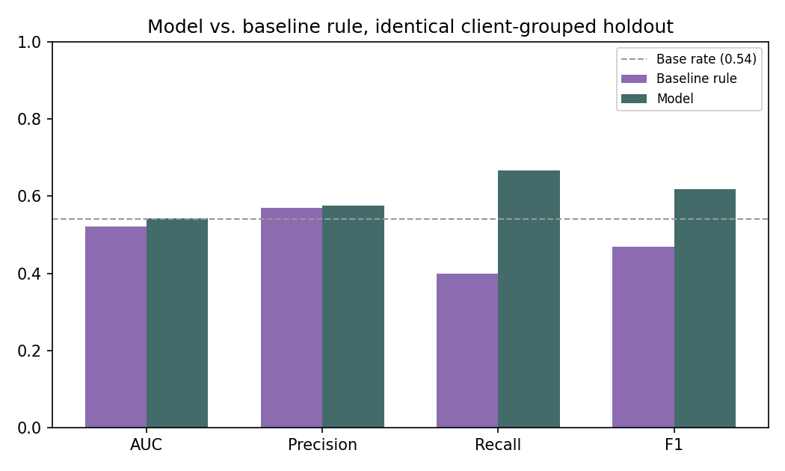
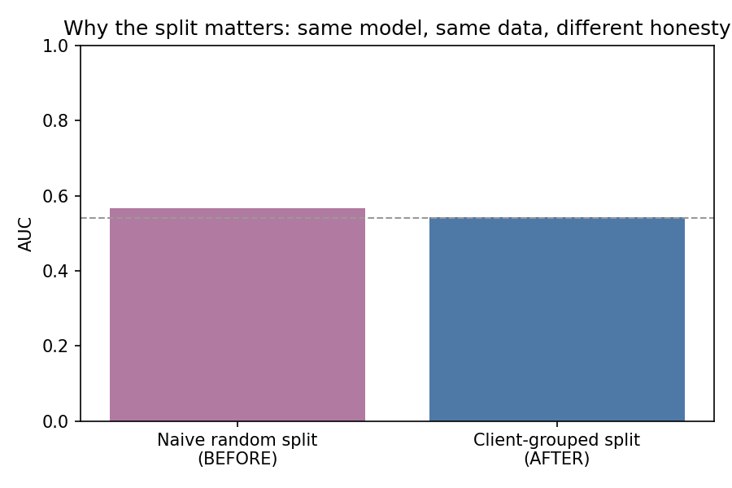
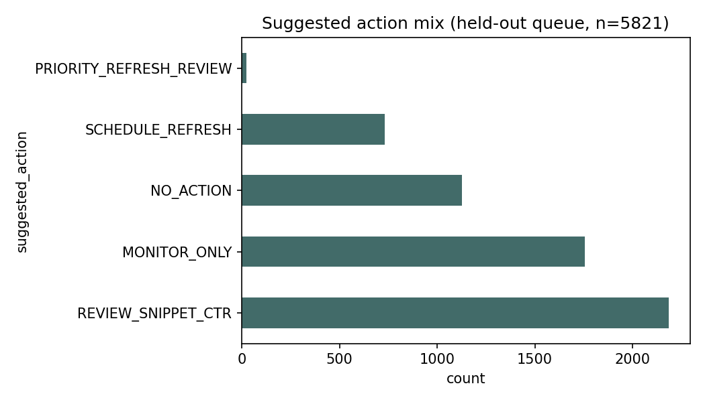
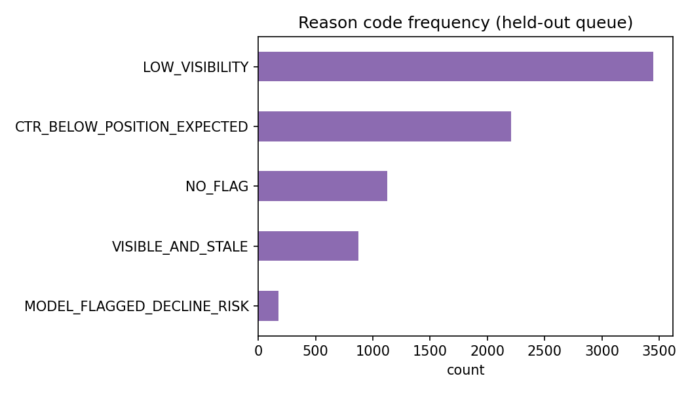

A client-grouped, leakage-audited model for prioritizing content-refresh review — built and validated on FlyRank's anonymized content-performance dataset.
Which of a client's existing pages is worth a reviewer's limited time to check for a refresh first? Using FlyRank's anonymized 30,000-row content-performance starter dataset (32 pseudonymized clients, trailing-90-day metrics), this paper builds a six-feature logistic regression to flag likely-declining pages, validated with a client-grouped holdout so no client's other pages leak into its own test score. Under that honest split the model reaches an AUC of 0.542 against a base rate of 0.540 — a real but modest signal — yet it still beats a transparent CTR-gap baseline rule on recall (0.667 vs 0.399) and F1 (0.618 vs 0.469) on the identical holdout. An error audit shows the model is most confidently wrong on stale, near-zero-traffic pages, and most confidently over-reassured on large, actively-updated pages that are in fact declining — a pattern that directly shapes the five-archetype action playbook this paper ends with. The result is decision-support, not a verdict: a ranked, reason-coded queue meant to sort a human reviewer's time, with explicit no-go rules for anything this weak-to-modest signal should never be allowed to do alone.
A content editor opens their dashboard on a Monday morning with 2,000 live pages and one hour to spend on review. Some pages are quietly losing traffic; most aren't. Scanning by hand is slow and inconsistent; trusting search-console rank alone misses pages that rank fine but have stopped converting clicks. The decision this paper supports is narrow and practical: given everything we can measure about a page in the last 90 days, which pages should a human look at first?
This is deliberately not a paper about predicting search rankings, nor about automating content decisions. It is about turning noisy signal into an honestly-scored, reason-coded queue — and being equally explicit about where that queue should not be trusted.
This paper uses the anonymized starter slice shipped with the FlyRank ML Internship: 30,000 rows, one per pseudonymized content item, across 32 clients, with trailing-90-day performance metrics (impressions, clicks, CTR, average position, engagement, and update recency).
Scope, stated plainly: the internship also provides a much larger hosted release (roughly 79 million rows across 104 clients, spanning January 2025 – June 2026). Early exploration touched that release's schema to understand its structure, but every model, audit, and recommendation in this paper runs on the 30,000-row starter slice only. That is a disclosed scope decision — see Limitations — not an oversight.
Exclusions: rows where avg_position == 0 were dropped throughout
(1,205 of 30,000), because a value of zero in that column means "no ranking data," not "rank
zero." Including them would have corrupted every position-based feature. 28,795 rows across 31
clients remain.
Public-safe by construction: the dataset contains no page titles, URLs, client names, or search queries — only pseudonymous client/content identifiers and numeric metrics. Nothing in this paper needed anything more identifying than that.
is_declining_label = 1 when a page's trend_direction reads
"down". That field is itself computed from the percent change between a page's
most recent 30-day impressions and the 30 days before that. Those underlying columns are
therefore never used as features — confirmed mechanically, not just asserted,
by recomputing the formula and checking the correlation.
Six features, all either static or drawn from before the label's comparison window:
ctr, avg_position, impressions_90d,
engagement_rate, days_since_last_update, search_volume.
A transparent, human-auditable rule: flag a page when the gap between its own CTR and the average CTR for its position bucket (1–3, 4–6, 7–10, 11–20, 20+) sits in the worst quartile — with that quartile threshold learned from training clients only.
Logistic regression, class-balanced, on the six features above.
This is the central methodological decision in this paper. Rows are not independent — many
rows share a client_id. A naive random row split lets a model see other pages from
the same client during training, which inflates every metric without teaching the
model anything that generalizes to a client it has never scored. This paper uses a
client-grouped split (GroupShuffleSplit, seed 42, 20% held out) —
no client appears in both train and test. The starter dataset carries no per-row timestamp, so
a time-aware split isn't available here; grouped is the correct honest choice given what the
data actually contains.
Both the model and the baseline rule are scored on the identical client-grouped holdout — 7 clients, 5,821 rows, none seen during training.
| System | AUC | Precision | Recall | F1 |
|---|---|---|---|---|
| Baseline rule (CTR gap) | 0.521 | 0.569 | 0.399 | 0.469 |
| Model (logistic regression) | 0.542 | 0.576 | 0.667 | 0.618 |
Base rate on this holdout: 0.540 — read every metric above against that number, not zero.

Reading this honestly: a coin flip already gets 54% of labels right on this holdout, so an AUC of 0.542 is a real but modest signal. The model's advantage over the rule is concentrated in recall (0.667 vs 0.399) — it catches more of the actual declining pages — while AUC and precision stay close between the two systems.
The same model scored under a naive random row split reaches AUC 0.566 — and 30 of the 31 clients in this dataset appear in both that split's train and test sets. The random split was never actually testing generalization to an unseen client; the client-grouped number (0.542) is the one this paper reports and stands behind.

Five rule-based archetypes — explicitly not statistical clusters — each mapped to one action, ranked by archetype priority and then by traffic at stake within each tier. Counts below are from the 5,821-row held-out queue.
| Archetype | Action | Count |
|---|---|---|
| Visible & Declining | PRIORITY_REFRESH_REVIEW | 25 |
| Visible & Stale | SCHEDULE_REFRESH | 730 |
| Striking-Distance CTR Gap | REVIEW_SNIPPET_CTR | 2,184 |
| Quiet / Low Visibility | MONITOR_ONLY | 1,755 |
| Stable | NO_ACTION | 1,127 |


Cheapest-and-most-visible first: clear the REVIEW_SNIPPET_CTR queue — a fast edit
on a page that already ranks — before committing editorial hours to full
PRIORITY_REFRESH_REVIEW rewrites. Given the model's modest AUC, treat priority
picks as candidates to sample-check, not execute wholesale.
MONITOR_ONLY means
"not urgent," never "delete."Every number on this page traces back to a notebook in the source repository, run with a fixed random seed (42) throughout. Clone the repo and re-run any notebook end-to-end to reproduce these results directly.
The queue CSV this work produces is intentionally excluded from version control (it's data, not code — see the repository's leak guard); re-run the notebooks to regenerate it. Committed metrics JSONs and chart files are the receipts every figure on this page traces back to.